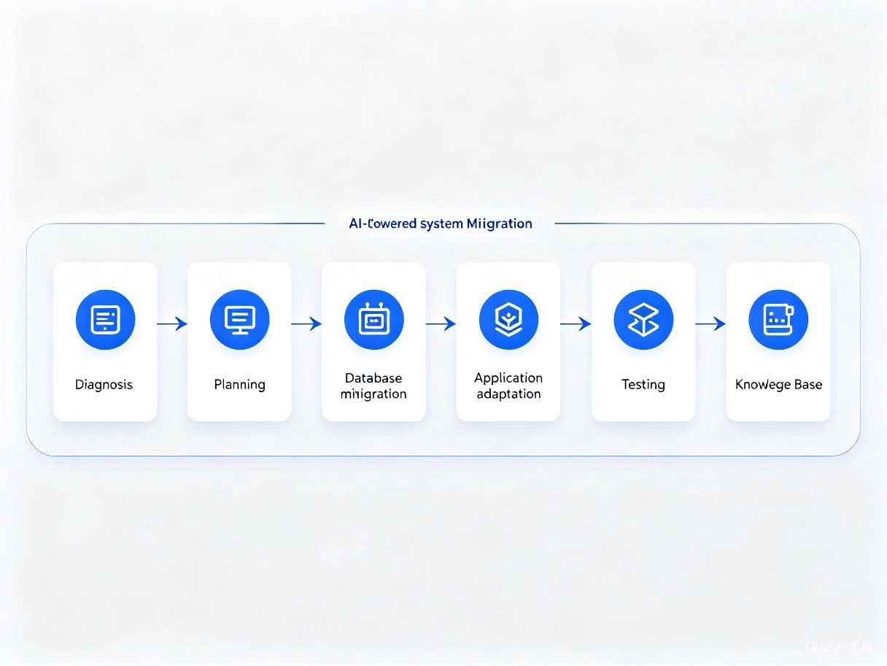

环卫信创通
基于 Trae Work + Trae IDE 的智慧环卫系统信创改造AI助手，让基层政府的信创改造不再难
一、创意名称与介绍
创意名称
「环卫信创通」 —— 基于Trae的智慧环卫系统信创改造AI助手
要解决的问题
当前全国各区县环卫局、城管局面临紧迫的信创改造任务：老旧的智慧环卫系统基于 CentOS + MySQL 或 Windows + SQL Server 架构运行多年，CentOS已停止维护存在安全隐患，MySQL/SQL Server需替换为国产数据库，同时系统必须通过等保2.0三级认证。然而基层政府资金紧张、IT人才短缺、改造经验不足，传统外包改造成本动辄百万，根本做不起。
创意动机
信创改造不是选择题，而是必答题。我长期关注政府信息化领域，亲眼看到基层政府在信创改造面前的无力感。当发现 Trae Work 和 Trae IDE 能够大幅降低开发和改造门槛时，我意识到：如果用AI来替代信创改造中大量重复的、依赖经验的工作，就能让基层政府也负担得起信创改造，让每一分财政资金都花在刀刃上。
产品类型
本创意是一个AI辅助的SaaS系统/工具集，通过 Trae Work 完成智能诊断和方案生成，通过 Trae IDE 完成代码迁移和适配开发，最终形成可复用的信创改造知识资产。
二、目标用户及痛点
目标用户
区县环卫局 / 城管局
信息化部门2-3人，负责现有智慧环卫系统的运维和信创改造，缺乏技术经验和预算。
地方环卫服务企业
在多个区县承接环卫运营项目，各地系统技术栈不一，需要统一标准进行信创改造。
信创集成商 / 软件开发商
承接政府信创改造项目，需要提升效率、降低成本、沉淀行业经验。
核心痛点
资金紧张
地方财政压力大，传统信创改造需大量外包人力投入，报价动辄百万级。
技术债务重
老旧系统运行5年以上，代码文档缺失，非标准SQL写法多，改造风险高。
人才短缺
基层IT团队仅2-3人，缺乏信创技术经验，不懂国产数据库和中间件。
合规要求严
涉及城市运行数据和公民个人信息，需满足等保2.0三级，难度倍增。
真实案例
以上海某区（CentOS + MySQL架构）和凉山州某县（Windows + SQL Server架构）为例，仅一个区的改造就涉及操作系统、数据库、中间件、浏览器及终端设备的全面适配，包含车辆作业管理、工人作业管理、环卫质量监察等多个子系统迁移。
三、价值与意义
降本增效
降低信创改造成本50%以上，让有限财政资金发挥更大效益。AI辅助将改造周期从6-8个月缩短至2-3个月。
自主可控
推动环卫行业核心技术国产化，保障城市运行数据安全，彻底解决CentOS停服等安全隐患。
技术平权
让基层政府和中小企业也能负担得起信创改造，不再是大城市的"专利"，缩小数字鸿沟。
知识沉淀
每次改造的经验自动沉淀为知识资产，后续项目可直接复用，单项目成本逐次递减30%。
让信创改造不再是大城市的"专利"，让每一分财政资金都花在刀刃上，让每一位基层IT人员都能轻松完成信创适配。
四、解决方案与核心功能
利用 Trae Work + Trae IDE 构建六个核心功能模块，覆盖信创改造全流程：
| 功能模块 | 功能描述 | 使用工具 |
|---|---|---|
| 系统诊断助手 | 上传系统文档和代码，AI自动识别技术栈、评估改造难度 | Trae Work |
| 迁移方案生成器 | 自动生成详细改造方案（时间表、风险点、回滚预案） | Trae Work |
| 代码迁移助手 | SQL Server/MySQL语法自动转换为达梦/人大金仓兼容语法 | Trae IDE |
| 适配代码生成 | 生成国产中间件配置、国产浏览器适配代码 | Trae IDE |
| 测试用例生成 | 自动生成信创环境功能测试、性能测试用例 | Trae Work |
| 知识库问答 | 信创改造常见问题智能问答，沉淀项目经验 | Trae Work |
改造流程（以上海某区为例）
系统诊断 Trae Work
上传系统架构文档、数据库DDL、核心业务代码，AI识别SQL不兼容点、存储过程、中间件依赖项。
方案生成 Trae Work
生成分阶段改造实施方案，含优先级排序、时间表、风险清单和回滚预案。
数据库迁移 Trae IDE
CentOS + MySQL 迁移至 麒麟V10 + 人大金仓，自动转换SQL语法、重写存储过程。
应用适配 Trae IDE
Tomcat迁移至东方通TongWeb，国产浏览器前端适配，麒麟OS部署脚本生成。
测试验证 Trae Work
自动生成功能回归测试、性能基线对比报告、等保合规检查清单。
知识沉淀 Trae Work
改造经验录入知识库，形成可复用资产，后续项目直接复用。

五、核心创新点
- 创新一 AI驱动的信创改造降本增效 —— 传统改造需3-5名工程师耗时3-6个月，用Trae 1人1-2周完成方案设计，SQL迁移效率提升80%，缺陷发现率提升50%。
- 创新二 环卫行业专属信创知识库 —— 针对车辆作业、人员调度、垃圾清运、设施管理等环卫业务场景，构建国产化技术栈映射表和常见问题库。
- 创新三 渐进式改造路径 —— 针对基层政府"缺钱缺人"的困境，设计分步走策略：先出评估报告，再迁移核心模块，最后全面适配，每步独立交付价值。
- 创新四 全栈覆盖端到端解决 —— 从系统诊断到知识沉淀，覆盖操作系统、数据库、中间件、浏览器、终端设备全栈适配，区别于仅解决数据库层面的传统工具。
六、技术架构
信创改造技术栈映射
| 改造层面 | 原有技术栈 | 信创目标技术栈 |
|---|---|---|
| 操作系统 | Windows Server / CentOS | 银河麒麟V10 / 统信UOS |
| 数据库 | SQL Server / MySQL / Oracle | 人大金仓 / 达梦 / OceanBase |
| 中间件 | Tomcat / Nginx | 东方通TongWeb / 金蝶Apusic |
| 浏览器 | Chrome / Edge | 奇安信可信浏览器 / 360安全浏览器 |
| 芯片 | x86 (Intel/AMD) | 鲲鹏 / 飞腾 / 海光 / 龙芯 |
七、落地场景
场景一：区县环卫局信创改造
上海某区环卫局系统运行超5年，CentOS + MySQL架构。通过环卫信创通完成全栈迁移，周期从6-8月缩短至2-3月，成本降低60%。
场景二：地方环卫企业系统升级
各地环卫企业在多个区县有项目，技术栈不一。统一信创改造标准，批量生成迁移脚本，经验复用，单项目成本逐次递减30%。
场景三：新建项目信创合规
新建智慧环卫项目从立项即按国产化标准建设，从0生成信创合规架构，一次过审，开发效率提升40%。
八、目前进展与下一步计划
目前处于创意和方案阶段。已用 Trae Work 完成本方案的梳理和结构化，用 Trae IDE 做了SQL语法转换的原型验证，证明技术路径可行。
下一步计划：
构建信创知识库
整理环卫行业信创改造的政策文件、技术规范、常见问题，形成可检索的智能知识库。
开发核心功能Demo
用Trae IDE开发SQL语法自动转换和系统诊断功能的最小可用版本。
试点验证
与区县环卫局合作试点，在实际环境中验证改造效果。